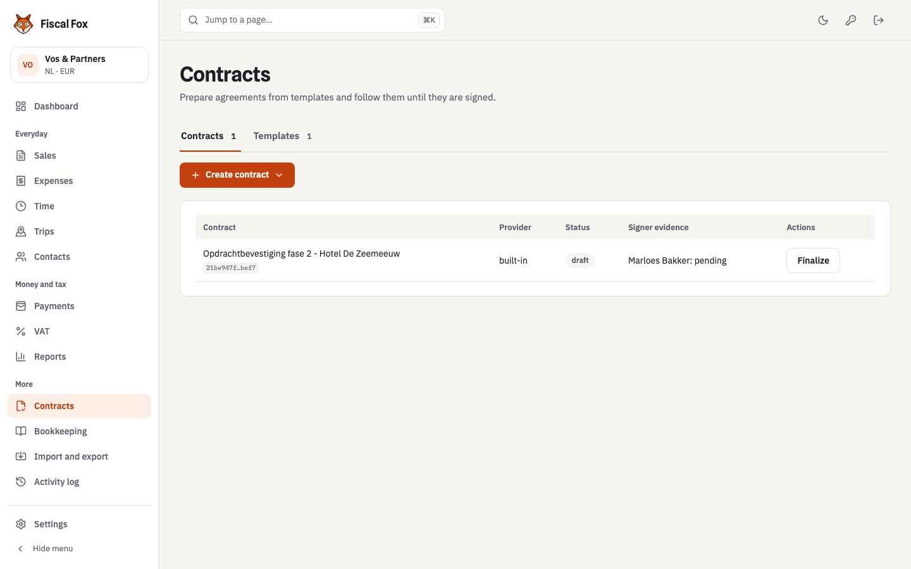

Contracts
Contracts prepares agreements from templates and follows them until they are signed. Use the Contracts and Templates tabs to switch views.

Templates
A template is the reusable text of an agreement.
- On the Templates tab, open Create template.
- Enter a Template name and choose the Contract source:
- Write it here (HTML with {{variables}}) and fill in the Contract HTML, or
- Upload a PDF. The PDF is sent as is, with a signature page added after its last page.
- Optionally add a Description and select Save template.
Editing a template saves a new version. Draft contracts use the newest version when they are finalized; finalized contracts keep the version they were signed from.
Create and send a contract
- On the Contracts tab, open Create contract.
- Enter a Title, then choose the Template and Contact.
- Enter the Signer name and Signer email.
- Choose the Provider: Built-in signing or DocuSign.
- Select Save draft.
Then move the contract along with the row actions:
- Finalize freezes the contract content and records its fingerprint (SHA-256).
- Send delivers it to the signer. The button reads Send queued while delivery runs in the background.
The Signer evidence column shows who has to sign and whether they did.
What the signer sees
With built-in signing, the signer opens a link to a public page that shows the contract (or names the attached PDF) and its fingerprint. They enter Your name and Your email, tick the consent box, and select Sign, or Decline with an optional reason. The decision is kept as evidence with the immutable contract version.
Important
Built-in signing records consent and audit evidence, but it is not a qualified electronic signature and may not suit every legal use. DocuSign is available when your administrator configures it; see Integrations.
Who can do this
Owners, admins, and members create templates and contracts. Everyone with access can view them. See Roles.